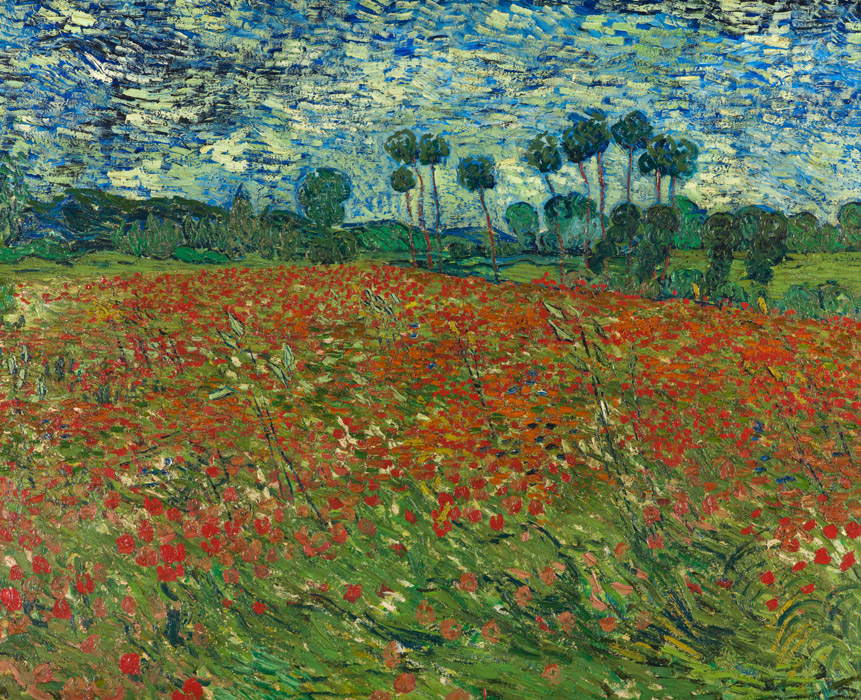

作品名 「ひなげし畑」
花言葉 「別れの悲しみ」「乙女らしさ」「恋の予感」
雛芥子(ヒナゲシ)
「別れの悲しみ」
ヒナゲシの花はポピーの仲間でケシ科・ケシ属の植物です。ケシ科の植物の実には入眠や鎮痛、麻痺をもたらすアルカロイドが含まれているため、薬として古代ギリシャやローマで使われていました。花言葉である「別れの悲しみ」は、ギリシャ神話のエピソードや中国の虞美人草の伝説などに由来するといわれています。
ひなげし畑
フィンセント・ファン・ゴッホ
フィンセント・ヴィレム・ファン・ゴッホは、オランダのポスト印象派の画家。記憶や想像によって描くことができない画家であり、900点近くの油絵作品のほとんどが、静物、人物か風景であり、眼前のモデルの写生である。自然を超えた世界に憧れつつも、現実の手がかりを得てはじめてその想像力が燃え上がることができたといえる。この作品は、ゴッホ独特な筆使いにてポピーの畑を描いたもの。ゴッホは何作品かポピーを題材に描いているが、本作はその中でも後期に描かれた作品。
| 作品名 | ひなげし畑 |
| 作者 | フィンセント・ファン・ゴッホ |
| 制作年 | 1890年 |
| 種類 | キャンバス・油彩 |
| 寸法 | 73×91.5cm |
| 所蔵 | デン・ハーグ市美術館 |